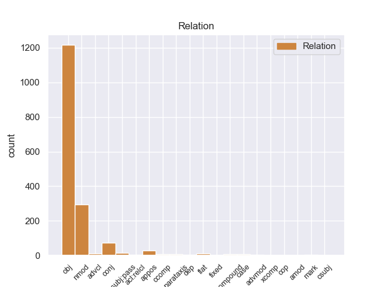
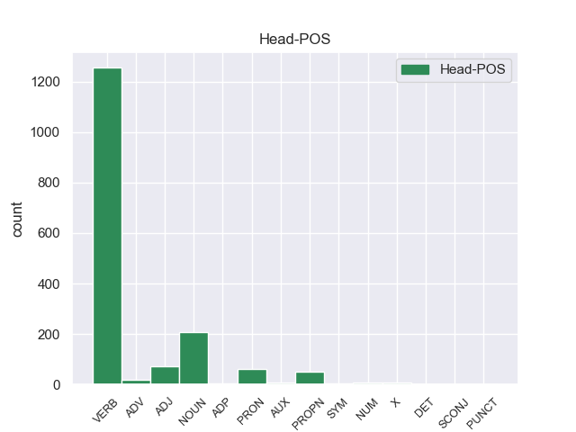
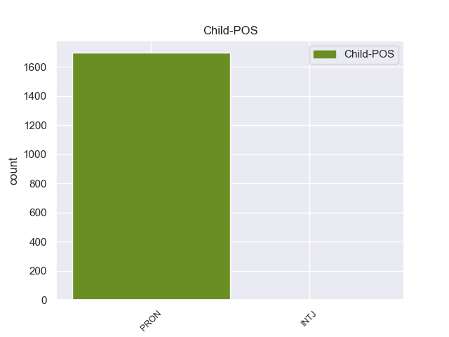

Distribution of features within this leaf



Morphosyntax Rules sorted by frequency.
- When the dependent token is the object(obj) of the head token, the Case needs to be Acc.
1 Para _ _ _ _ 0 _ _ _
2 poder _ _ _ _ 0 _ _ _
3 estudiar estudiar VERB _ VerbForm=Inf 0 _ _ _
4 los él PRON _ Case=Acc|Gender=Masc|Number=Plur|Person=3|PrepCase=Npr|PronType=Prs 3 obj _ _
5 mejor _ _ _ _ 0 _ _ _
6 , _ _ _ _ 0 _ _ _
7 Ghazali _ _ _ _ 0 _ _ _
8 introdujo _ _ _ _ 0 _ _ _
9 varios _ _ _ _ 0 _ _ _
10 peces _ _ _ _ 0 _ _ _
11 en _ _ _ _ 0 _ _ _
12 un _ _ _ _ 0 _ _ _
13 tanque _ _ _ _ 0 _ _ _
14 y _ _ _ _ 0 _ _ _
15 , _ _ _ _ 0 _ _ _
16 tras _ _ _ _ 0 _ _ _
17 varias _ _ _ _ 0 _ _ _
18 semanas _ _ _ _ 0 _ _ _
19 de _ _ _ _ 0 _ _ _
20 aclimatación _ _ _ _ 0 _ _ _
21 , _ _ _ _ 0 _ _ _
22 comenzó _ _ _ _ 0 _ _ _
23 a _ _ _ _ 0 _ _ _
24 grabar _ _ _ _ 0 _ _ _
25 sus _ _ _ _ 0 _ _ _
26 sonidos _ _ _ _ 0 _ _ _
27 , _ _ _ _ 0 _ _ _
28 según _ _ _ _ 0 _ _ _
29 recoge _ _ _ _ 0 _ _ _
30 el _ _ _ _ 0 _ _ _
31 periódico _ _ _ _ 0 _ _ _
32 New _ _ _ _ 0 _ _ _
33 Zealand _ _ _ _ 0 _ _ _
34 Herald _ _ _ _ 0 _ _ _
35 . _ _ _ _ 0 _ _ _
1 A _ _ _ _ 0 _ _ _
2 continuación _ _ _ _ 0 _ _ _
3 , _ _ _ _ 0 _ _ _
4 sonarán _ _ _ _ 0 _ _ _
5 los _ _ _ _ 0 _ _ _
6 ritmos _ _ _ _ 0 _ _ _
7 más _ _ _ _ 0 _ _ _
8 intensos _ _ _ _ 0 _ _ _
9 de _ _ _ _ 0 _ _ _
10 los _ _ _ _ 0 _ _ _
11 llanos _ _ _ _ 0 _ _ _
12 interpretados _ _ _ _ 0 _ _ _
13 por _ _ _ _ 0 _ _ _
14 una _ _ _ _ 0 _ _ _
15 agrupación _ _ _ _ 0 _ _ _
16 que _ _ _ _ 0 _ _ _
17 romperá _ _ _ _ 0 _ _ _
18 esquemas _ _ _ _ 0 _ _ _
19 : _ _ _ _ 0 _ _ _
20 el _ _ _ _ 0 _ _ _
21 Ensamble _ _ _ _ 0 _ _ _
22 de _ _ _ _ 0 _ _ _
23 Arpas _ _ _ _ 0 _ _ _
24 de _ _ _ _ 0 _ _ _
25 la _ _ _ _ 0 _ _ _
26 Orquesta _ _ _ _ 0 _ _ _
27 de _ _ _ _ 0 _ _ _
28 Música _ _ _ _ 0 _ _ _
29 Popular _ _ _ _ 0 _ _ _
30 de _ _ _ _ 0 _ _ _
31 el _ _ _ _ 0 _ _ _
32 Estado _ _ _ _ 0 _ _ _
33 Guárico _ _ _ _ 0 _ _ _
34 , _ _ _ _ 0 _ _ _
35 integrado _ _ _ _ 0 _ _ _
36 por _ _ _ _ 0 _ _ _
37 14 _ _ _ _ 0 _ _ _
38 ejecutantes _ _ _ _ 0 _ _ _
39 , _ _ _ _ 0 _ _ _
40 todos _ _ _ _ 0 _ _ _
41 formados _ _ _ _ 0 _ _ _
42 por _ _ _ _ 0 _ _ _
43 El _ _ _ _ 0 _ _ _
44 Sistema _ _ _ _ 0 _ _ _
45 , _ _ _ _ 0 _ _ _
46 siendo _ _ _ _ 0 _ _ _
47 algunos alguno PRON _ Gender=Masc|Number=Plur|PronType=Ind 0 _ _ _
48 de _ _ _ _ 0 _ _ _
49 ellos él PRON _ Case=Acc,Nom|Gender=Masc|Number=Plur|Person=3|PronType=Prs 47 nmod _ _
50 ganadores _ _ _ _ 0 _ _ _
51 de _ _ _ _ 0 _ _ _
52 el _ _ _ _ 0 _ _ _
53 reconocido _ _ _ _ 0 _ _ _
54 Festival _ _ _ _ 0 _ _ _
55 Internacional _ _ _ _ 0 _ _ _
56 de _ _ _ _ 0 _ _ _
57 Arpas _ _ _ _ 0 _ _ _
58 Infantil _ _ _ _ 0 _ _ _
59 y _ _ _ _ 0 _ _ _
60 Adultos _ _ _ _ 0 _ _ _
61 de _ _ _ _ 0 _ _ _
62 Villavicencio _ _ _ _ 0 _ _ _
63 , _ _ _ _ 0 _ _ _
64 Colombia _ _ _ _ 0 _ _ _
65 . _ _ _ _ 0 _ _ _
1 Los _ _ _ _ 0 _ _ _
2 ejemplares _ _ _ _ 0 _ _ _
3 mas _ _ _ _ 0 _ _ _
4 grandes _ _ _ _ 0 _ _ _
5 llegaban llegar VERB _ Mood=Ind|Number=Plur|Person=3|Tense=Imp|VerbForm=Fin 0 _ _ _
6 a _ _ _ _ 0 _ _ _
7 4 _ _ _ _ 0 _ _ _
8 metros _ _ _ _ 0 _ _ _
9 de _ _ _ _ 0 _ _ _
10 altura _ _ _ _ 0 _ _ _
11 y _ _ _ _ 0 _ _ _
12 un _ _ _ _ 0 _ _ _
13 peso _ _ _ _ 0 _ _ _
14 de _ _ _ _ 0 _ _ _
15 hasta _ _ _ _ 0 _ _ _
16 10 _ _ _ _ 0 _ _ _
17 toneladas _ _ _ _ 0 _ _ _
18 , _ _ _ _ 0 _ _ _
19 pero _ _ _ _ 0 _ _ _
20 lo él PRON _ Case=Acc|Gender=Masc|Number=Sing|Person=3|PrepCase=Npr|PronType=Prs 5 conj _ _
21 más _ _ _ _ 0 _ _ _
22 normal _ _ _ _ 0 _ _ _
23 era _ _ _ _ 0 _ _ _
24 que _ _ _ _ 0 _ _ _
25 midiesen _ _ _ _ 0 _ _ _
26 poco _ _ _ _ 0 _ _ _
27 más _ _ _ _ 0 _ _ _
28 de _ _ _ _ 0 _ _ _
29 3 _ _ _ _ 0 _ _ _
30 metros _ _ _ _ 0 _ _ _
31 de _ _ _ _ 0 _ _ _
32 altura _ _ _ _ 0 _ _ _
33 y _ _ _ _ 0 _ _ _
34 pesaran _ _ _ _ 0 _ _ _
35 unas _ _ _ _ 0 _ _ _
36 6 _ _ _ _ 0 _ _ _
37 toneladas _ _ _ _ 0 _ _ _
38 . _ _ _ _ 0 _ _ _
1 La _ _ _ _ 0 _ _ _
2 Batalla _ _ _ _ 0 _ _ _
3 de _ _ _ _ 0 _ _ _
4 Gavinana _ _ _ _ 0 _ _ _
5 se _ _ _ _ 0 _ _ _
6 libró _ _ _ _ 0 _ _ _
7 el _ _ _ _ 0 _ _ _
8 3 _ _ _ _ 0 _ _ _
9 de _ _ _ _ 0 _ _ _
10 agosto _ _ _ _ 0 _ _ _
11 de _ _ _ _ 0 _ _ _
12 1530 _ _ _ _ 0 _ _ _
13 , _ _ _ _ 0 _ _ _
14 dentro _ _ _ _ 0 _ _ _
15 de _ _ _ _ 0 _ _ _
16 el _ _ _ _ 0 _ _ _
17 " _ _ _ _ 0 _ _ _
18 Sitio _ _ _ _ 0 _ _ _
19 de _ _ _ _ 0 _ _ _
20 Florencia _ _ _ _ 0 _ _ _
21 ( _ _ _ _ 0 _ _ _
22 1529-1530 _ _ _ _ 0 _ _ _
23 ) _ _ _ _ 0 _ _ _
24 entre _ _ _ _ 0 _ _ _
25 3.500 _ _ _ _ 0 _ _ _
26 mercenarios _ _ _ _ 0 _ _ _
27 a _ _ _ _ 0 _ _ _
28 sueldo _ _ _ _ 0 _ _ _
29 de _ _ _ _ 0 _ _ _
30 los _ _ _ _ 0 _ _ _
31 florentinos _ _ _ _ 0 _ _ _
32 comandados _ _ _ _ 0 _ _ _
33 por _ _ _ _ 0 _ _ _
34 Francesco _ _ _ _ 0 _ _ _
35 Ferruccio _ _ _ _ 0 _ _ _
36 y _ _ _ _ 0 _ _ _
37 las _ _ _ _ 0 _ _ _
38 fuerzas _ _ _ _ 0 _ _ _
39 imperiales _ _ _ _ 0 _ _ _
40 de _ _ _ _ 0 _ _ _
41 Carlos _ _ _ _ 0 _ _ _
42 V _ _ _ _ 0 _ _ _
43 de _ _ _ _ 0 _ _ _
44 el _ _ _ _ 0 _ _ _
45 Sacro _ _ _ _ 0 _ _ _
46 Imperio _ _ _ _ 0 _ _ _
47 Romano _ _ _ _ 0 _ _ _
48 Germánico _ _ _ _ 0 _ _ _
49 , _ _ _ _ 0 _ _ _
50 con _ _ _ _ 0 _ _ _
51 más _ _ _ _ 0 _ _ _
52 de _ _ _ _ 0 _ _ _
53 9.000 _ _ _ _ 0 _ _ _
54 soldados _ _ _ _ 0 _ _ _
55 bajo _ _ _ _ 0 _ _ _
56 el _ _ _ _ 0 _ _ _
57 mando _ _ _ _ 0 _ _ _
58 de _ _ _ _ 0 _ _ _
59 diferentes _ _ _ _ 0 _ _ _
60 condottieros _ _ _ _ 0 _ _ _
61 como _ _ _ _ 0 _ _ _
62 Fabrizio fabrizio PROPN _ Gender=Masc|Number=Sing 0 _ _ _
63 Maramaldo _ _ _ _ 0 _ _ _
64 , _ _ _ _ 0 _ _ _
65 Alessandro _ _ _ _ 0 _ _ _
66 Vitelli _ _ _ _ 0 _ _ _
67 y _ _ _ _ 0 _ _ _
68 Niccolò _ _ _ _ 0 _ _ _
69 Bracciolini _ _ _ _ 0 _ _ _
70 todos _ _ _ _ 0 _ _ _
71 ellos él PRON _ Case=Acc,Nom|Gender=Masc|Number=Plur|Person=3|PronType=Prs 62 appos _ _
72 bajo _ _ _ _ 0 _ _ _
73 las _ _ _ _ 0 _ _ _
74 órdenes _ _ _ _ 0 _ _ _
75 de _ _ _ _ 0 _ _ _
76 Filiberto _ _ _ _ 0 _ _ _
77 de _ _ _ _ 0 _ _ _
78 Chalon _ _ _ _ 0 _ _ _
79 , _ _ _ _ 0 _ _ _
80 Príncipe _ _ _ _ 0 _ _ _
81 de _ _ _ _ 0 _ _ _
82 Orange _ _ _ _ 0 _ _ _
83 . _ _ _ _ 0 _ _ _
1 Anderton _ _ _ _ 0 _ _ _
2 entonces _ _ _ _ 0 _ _ _
3 revela _ _ _ _ 0 _ _ _
4 que _ _ _ _ 0 _ _ _
5 ella él PRON _ Case=Acc,Nom|Gender=Fem|Number=Sing|Person=3|PronType=Prs 7 nsubj:pass _ _
6 fue _ _ _ _ 0 _ _ _
7 asesinada asesinar VERB _ Gender=Fem|Number=Sing|Tense=Past|VerbForm=Part 0 _ _ _
8 ya _ _ _ _ 0 _ _ _
9 que _ _ _ _ 0 _ _ _
10 quería _ _ _ _ 0 _ _ _
11 que _ _ _ _ 0 _ _ _
12 le _ _ _ _ 0 _ _ _
13 regresaran _ _ _ _ 0 _ _ _
14 a _ _ _ _ 0 _ _ _
15 Agatha _ _ _ _ 0 _ _ _
16 , _ _ _ _ 0 _ _ _
17 esto _ _ _ _ 0 _ _ _
18 haría _ _ _ _ 0 _ _ _
19 que _ _ _ _ 0 _ _ _
20 el _ _ _ _ 0 _ _ _
21 sistema _ _ _ _ 0 _ _ _
22 fuera _ _ _ _ 0 _ _ _
23 inútil _ _ _ _ 0 _ _ _
24 y _ _ _ _ 0 _ _ _
25 PreCrimen _ _ _ _ 0 _ _ _
26 sería _ _ _ _ 0 _ _ _
27 descontinuado _ _ _ _ 0 _ _ _
28 . _ _ _ _ 0 _ _ _
1 De _ _ _ _ 0 _ _ _
2 forma _ _ _ _ 0 _ _ _
3 innata _ _ _ _ 0 _ _ _
4 , _ _ _ _ 0 _ _ _
5 la _ _ _ _ 0 _ _ _
6 mente _ _ _ _ 0 _ _ _
7 humana _ _ _ _ 0 _ _ _
8 busca _ _ _ _ 0 _ _ _
9 patrones _ _ _ _ 0 _ _ _
10 donde _ _ _ _ 0 _ _ _
11 no _ _ _ _ 0 _ _ _
12 los _ _ _ _ 0 _ _ _
13 hay _ _ _ _ 0 _ _ _
14 , _ _ _ _ 0 _ _ _
15 significados _ _ _ _ 0 _ _ _
16 donde _ _ _ _ 0 _ _ _
17 solo _ _ _ _ 0 _ _ _
18 hay haber VERB _ Mood=Ind|Number=Sing|Person=3|Tense=Pres|VerbForm=Fin 0 _ _ _
19 silencio _ _ _ _ 0 _ _ _
20 y _ _ _ _ 0 _ _ _
21 causalidades _ _ _ _ 0 _ _ _
22 donde _ _ _ _ 0 _ _ _
23 lo él PRON _ Case=Acc|Gender=Masc|Number=Sing|Person=3|PrepCase=Npr|PronType=Prs 18 advcl _ _
24 que _ _ _ _ 0 _ _ _
25 rige _ _ _ _ 0 _ _ _
26 es _ _ _ _ 0 _ _ _
27 la _ _ _ _ 0 _ _ _
28 casualidad _ _ _ _ 0 _ _ _
29 . _ _ _ _ 0 _ _ _
1 Señores _ _ _ _ 0 _ _ _
2 , _ _ _ _ 0 _ _ _
3 no _ _ _ _ 0 _ _ _
4 basta _ _ _ _ 0 _ _ _
5 con _ _ _ _ 0 _ _ _
6 poner _ _ _ _ 0 _ _ _
7 un _ _ _ _ 0 _ _ _
8 negocio _ _ _ _ 0 _ _ _
9 y _ _ _ _ 0 _ _ _
10 ya _ _ _ _ 0 _ _ _
11 esta _ _ _ _ 0 _ _ _
12 , _ _ _ _ 0 _ _ _
13 hay _ _ _ _ 0 _ _ _
14 que _ _ _ _ 0 _ _ _
15 tener _ _ _ _ 0 _ _ _
16 seriedad _ _ _ _ 0 _ _ _
17 , _ _ _ _ 0 _ _ _
18 no _ _ _ _ 0 _ _ _
19 intentar _ _ _ _ 0 _ _ _
20 engañar _ _ _ _ 0 _ _ _
21 a _ _ _ _ 0 _ _ _
22 el _ _ _ _ 0 _ _ _
23 cliente _ _ _ _ 0 _ _ _
24 , _ _ _ _ 0 _ _ _
25 si _ _ _ _ 0 _ _ _
26 quiere _ _ _ _ 0 _ _ _
27 colocar _ _ _ _ 0 _ _ _
28 un _ _ _ _ 0 _ _ _
29 equipo _ _ _ _ 0 _ _ _
30 usado _ _ _ _ 0 _ _ _
31 , _ _ _ _ 0 _ _ _
32 indique _ _ _ _ 0 _ _ _
33 se _ _ _ _ 0 _ _ _
34 lo _ _ _ _ 0 _ _ _
35 a _ _ _ _ 0 _ _ _
36 el _ _ _ _ 0 _ _ _
37 cliente _ _ _ _ 0 _ _ _
38 , _ _ _ _ 0 _ _ _
39 reduzca reducir VERB _ Mood=Sub|Number=Sing|Person=3|Tense=Pres|VerbForm=Fin 0 _ _ _
40 le _ _ _ _ 0 _ _ _
41 el _ _ _ _ 0 _ _ _
42 precio _ _ _ _ 0 _ _ _
43 , _ _ _ _ 0 _ _ _
44 que _ _ _ _ 0 _ _ _
45 es _ _ _ _ 0 _ _ _
46 lo él PRON _ Case=Acc|Gender=Masc|Number=Sing|Person=3|PrepCase=Npr|PronType=Prs 39 parataxis _ _
47 que _ _ _ _ 0 _ _ _
48 corresponde _ _ _ _ 0 _ _ _
49 , _ _ _ _ 0 _ _ _
50 y _ _ _ _ 0 _ _ _
51 que _ _ _ _ 0 _ _ _
52 sea _ _ _ _ 0 _ _ _
53 el _ _ _ _ 0 _ _ _
54 cliente _ _ _ _ 0 _ _ _
55 el _ _ _ _ 0 _ _ _
56 que _ _ _ _ 0 _ _ _
57 decida _ _ _ _ 0 _ _ _
58 . _ _ _ _ 0 _ _ _
1 No _ _ _ _ 0 _ _ _
2 somos _ _ _ _ 0 _ _ _
3 los _ _ _ _ 0 _ _ _
4 únicos _ _ _ _ 0 _ _ _
5 que _ _ _ _ 0 _ _ _
6 cuando _ _ _ _ 0 _ _ _
7 se _ _ _ _ 0 _ _ _
8 lanzaron _ _ _ _ 0 _ _ _
9 los _ _ _ _ 0 _ _ _
10 Microsoft _ _ _ _ 0 _ _ _
11 KIN _ _ _ _ 0 _ _ _
12 pensaban pensar VERB _ Mood=Ind|Number=Plur|Person=3|Tense=Imp|VerbForm=Fin 0 _ _ _
13 que _ _ _ _ 0 _ _ _
14 con _ _ _ _ 0 _ _ _
15 estos _ _ _ _ 0 _ _ _
16 terminales _ _ _ _ 0 _ _ _
17 Microsoft _ _ _ _ 0 _ _ _
18 lo él PRON _ Case=Acc|Gender=Masc|Number=Sing|Person=3|PrepCase=Npr|PronType=Prs 12 ccomp _ _
19 que _ _ _ _ 0 _ _ _
20 hacía _ _ _ _ 0 _ _ _
21 era _ _ _ _ 0 _ _ _
22 jugar _ _ _ _ 0 _ _ _
23 se _ _ _ _ 0 _ _ _
24 la _ _ _ _ 0 _ _ _
25 creando _ _ _ _ 0 _ _ _
26 más _ _ _ _ 0 _ _ _
27 plataformas _ _ _ _ 0 _ _ _
28 , _ _ _ _ 0 _ _ _
29 perdiendo _ _ _ _ 0 _ _ _
30 enfoque _ _ _ _ 0 _ _ _
31 donde _ _ _ _ 0 _ _ _
32 realmente _ _ _ _ 0 _ _ _
33 lo _ _ _ _ 0 _ _ _
34 necesitaba _ _ _ _ 0 _ _ _
35 , _ _ _ _ 0 _ _ _
36 en _ _ _ _ 0 _ _ _
37 Windows _ _ _ _ 0 _ _ _
38 Phone _ _ _ _ 0 _ _ _
39 7 _ _ _ _ 0 _ _ _
40 y _ _ _ _ 0 _ _ _
41 lanzando _ _ _ _ 0 _ _ _
42 unos _ _ _ _ 0 _ _ _
43 terminales _ _ _ _ 0 _ _ _
44 que _ _ _ _ 0 _ _ _
45 la _ _ _ _ 0 _ _ _
46 verdad _ _ _ _ 0 _ _ _
47 , _ _ _ _ 0 _ _ _
48 no _ _ _ _ 0 _ _ _
49 son _ _ _ _ 0 _ _ _
50 nada _ _ _ _ 0 _ _ _
51 de _ _ _ _ 0 _ _ _
52 el _ _ _ _ 0 _ _ _
53 otro _ _ _ _ 0 _ _ _
54 mundo _ _ _ _ 0 _ _ _
55 . _ _ _ _ 0 _ _ _
1 Desde _ _ _ _ 0 _ _ _
2 la _ _ _ _ 0 _ _ _
3 cultura _ _ _ _ 0 _ _ _
4 forzada _ _ _ _ 0 _ _ _
5 de _ _ _ _ 0 _ _ _
6 Ba ba PROPN _ _ 0 _ _ _
7 Sing _ _ _ _ 0 _ _ _
8 Se él PRON _ Case=Acc,Dat|Person=3|PrepCase=Npr|PronType=Prs|Reflex=Yes 6 flat _ _
9 a _ _ _ _ 0 _ _ _
10 los _ _ _ _ 0 _ _ _
11 aislacionistas _ _ _ _ 0 _ _ _
12 habitantes _ _ _ _ 0 _ _ _
13 de _ _ _ _ 0 _ _ _
14 la _ _ _ _ 0 _ _ _
15 Isla _ _ _ _ 0 _ _ _
16 Kyoshi _ _ _ _ 0 _ _ _
17 , _ _ _ _ 0 _ _ _
18 la _ _ _ _ 0 _ _ _
19 cultura _ _ _ _ 0 _ _ _
20 de _ _ _ _ 0 _ _ _
21 el _ _ _ _ 0 _ _ _
22 Reino _ _ _ _ 0 _ _ _
23 Tierra _ _ _ _ 0 _ _ _
24 es _ _ _ _ 0 _ _ _
25 mucho _ _ _ _ 0 _ _ _
26 menos _ _ _ _ 0 _ _ _
27 definidos _ _ _ _ 0 _ _ _
28 que _ _ _ _ 0 _ _ _
29 los _ _ _ _ 0 _ _ _
30 de _ _ _ _ 0 _ _ _
31 las _ _ _ _ 0 _ _ _
32 otras _ _ _ _ 0 _ _ _
33 naciones _ _ _ _ 0 _ _ _
34 . _ _ _ _ 0 _ _ _
1 Ella él PRON _ Case=Acc,Nom|Gender=Fem|Number=Sing|Person=3|PronType=Prs 3 advmod _ _
2 le _ _ _ _ 0 _ _ _
3 cuenta contar VERB _ Mood=Ind|Number=Sing|Person=3|Tense=Pres|VerbForm=Fin 0 _ _ _
4 a _ _ _ _ 0 _ _ _
5 Violet _ _ _ _ 0 _ _ _
6 que _ _ _ _ 0 _ _ _
7 se _ _ _ _ 0 _ _ _
8 puede _ _ _ _ 0 _ _ _
9 desterrar _ _ _ _ 0 _ _ _
10 a _ _ _ _ 0 _ _ _
11 un _ _ _ _ 0 _ _ _
12 espíritu _ _ _ _ 0 _ _ _
13 sí _ _ _ _ 0 _ _ _
14 quema _ _ _ _ 0 _ _ _
15 una _ _ _ _ 0 _ _ _
16 de _ _ _ _ 0 _ _ _
17 sus _ _ _ _ 0 _ _ _
18 posesiones _ _ _ _ 0 _ _ _
19 cercanas _ _ _ _ 0 _ _ _
20 y _ _ _ _ 0 _ _ _
21 recita _ _ _ _ 0 _ _ _
22 la _ _ _ _ 0 _ _ _
23 palabra _ _ _ _ 0 _ _ _
24 " _ _ _ _ 0 _ _ _
25 Croatoan _ _ _ _ 0 _ _ _
26 " _ _ _ _ 0 _ _ _
27 . _ _ _ _ 0 _ _ _
1 La _ _ _ _ 0 _ _ _
2 expresión _ _ _ _ 0 _ _ _
3 se él PRON _ Case=Acc,Dat|Person=3|PrepCase=Npr|PronType=Prs|Reflex=Yes 7 compound _ _
4 · _ _ _ _ 0 _ _ _
5 mi _ _ _ _ 0 _ _ _
6 · _ _ _ _ 0 _ _ _
7 nit nit X _ _ 0 _ _ _
8 se _ _ _ _ 0 _ _ _
9 cree _ _ _ _ 0 _ _ _
10 que _ _ _ _ 0 _ _ _
11 indica _ _ _ _ 0 _ _ _
12 una _ _ _ _ 0 _ _ _
13 disminución _ _ _ _ 0 _ _ _
14 de _ _ _ _ 0 _ _ _
15 una _ _ _ _ 0 _ _ _
16 8 _ _ _ _ 0 _ _ _
17 ª _ _ _ _ 0 _ _ _
18 . _ _ _ _ 0 _ _ _
1 El _ _ _ _ 0 _ _ _
2 hotel _ _ _ _ 0 _ _ _
3 ha _ _ _ _ 0 _ _ _
4 reabierto _ _ _ _ 0 _ _ _
5 sus _ _ _ _ 0 _ _ _
6 puertas _ _ _ _ 0 _ _ _
7 recientemente _ _ _ _ 0 _ _ _
8 , _ _ _ _ 0 _ _ _
9 erigiéndo _ _ _ _ 0 _ _ _
10 se _ _ _ _ 0 _ _ _
11 como _ _ _ _ 0 _ _ _
12 el _ _ _ _ 0 _ _ _
13 nuevo _ _ _ _ 0 _ _ _
14 icono _ _ _ _ 0 _ _ _
15 de _ _ _ _ 0 _ _ _
16 la _ _ _ _ 0 _ _ _
17 elegancia _ _ _ _ 0 _ _ _
18 tropical _ _ _ _ 0 _ _ _
19 en _ _ _ _ 0 _ _ _
20 la _ _ _ _ 0 _ _ _
21 isla _ _ _ _ 0 _ _ _
22 y _ _ _ _ 0 _ _ _
23 un _ _ _ _ 0 _ _ _
24 oasis _ _ _ _ 0 _ _ _
25 perfecto perfecto ADJ _ Gender=Masc|Number=Sing 0 _ _ _
26 para _ _ _ _ 0 _ _ _
27 los él PRON _ Case=Acc|Gender=Masc|Number=Plur|Person=3|PrepCase=Npr|PronType=Prs 25 mark _ _
28 que _ _ _ _ 0 _ _ _
29 quieran _ _ _ _ 0 _ _ _
30 disfrutar _ _ _ _ 0 _ _ _
31 de _ _ _ _ 0 _ _ _
32 la _ _ _ _ 0 _ _ _
33 Naturaleza _ _ _ _ 0 _ _ _
34 , _ _ _ _ 0 _ _ _
35 la _ _ _ _ 0 _ _ _
36 playa _ _ _ _ 0 _ _ _
37 , _ _ _ _ 0 _ _ _
38 el _ _ _ _ 0 _ _ _
39 lujo _ _ _ _ 0 _ _ _
40 y _ _ _ _ 0 _ _ _
41 el _ _ _ _ 0 _ _ _
42 confort _ _ _ _ 0 _ _ _
43 en _ _ _ _ 0 _ _ _
44 un _ _ _ _ 0 _ _ _
45 viaje _ _ _ _ 0 _ _ _
46 especial _ _ _ _ 0 _ _ _
47 . _ _ _ _ 0 _ _ _
1 Las _ _ _ _ 0 _ _ _
2 bajas _ _ _ _ 0 _ _ _
3 de _ _ _ _ 0 _ _ _
4 el _ _ _ _ 0 _ _ _
5 Real _ _ _ _ 0 _ _ _
6 Madrid _ _ _ _ 0 _ _ _
7 serán _ _ _ _ 0 _ _ _
8 variadas _ _ _ _ 0 _ _ _
9 , _ _ _ _ 0 _ _ _
10 una _ _ _ _ 0 _ _ _
11 de _ _ _ _ 0 _ _ _
12 ellas _ _ _ _ 0 _ _ _
13 por _ _ _ _ 0 _ _ _
14 ejemplo _ _ _ _ 0 _ _ _
15 será _ _ _ _ 0 _ _ _
16 la _ _ _ _ 0 _ _ _
17 de _ _ _ _ 0 _ _ _
18 la _ _ _ _ 0 _ _ _
19 salida _ _ _ _ 0 _ _ _
20 de _ _ _ _ 0 _ _ _
21 Kaká _ _ _ _ 0 _ _ _
22 a _ _ _ _ 0 _ _ _
23 final _ _ _ _ 0 _ _ _
24 de _ _ _ _ 0 _ _ _
25 la _ _ _ _ 0 _ _ _
26 temporada _ _ _ _ 0 _ _ _
27 por _ _ _ _ 0 _ _ _
28 un _ _ _ _ 0 _ _ _
29 valor _ _ _ _ 0 _ _ _
30 de _ _ _ _ 0 _ _ _
31 35 _ _ _ _ 0 _ _ _
32 millones _ _ _ _ 0 _ _ _
33 de _ _ _ _ 0 _ _ _
34 euros euro NOUN _ _ 0 _ _ _
35 que _ _ _ _ 0 _ _ _
36 es _ _ _ _ 0 _ _ _
37 lo él PRON _ Case=Acc|Gender=Masc|Number=Sing|Person=3|PrepCase=Npr|PronType=Prs 34 acl:relcl _ _
38 que _ _ _ _ 0 _ _ _
39 piden _ _ _ _ 0 _ _ _
40 por _ _ _ _ 0 _ _ _
41 su _ _ _ _ 0 _ _ _
42 salida _ _ _ _ 0 _ _ _
43 aproximadamente _ _ _ _ 0 _ _ _
44 , _ _ _ _ 0 _ _ _
45 un _ _ _ _ 0 _ _ _
46 dinero _ _ _ _ 0 _ _ _
47 que _ _ _ _ 0 _ _ _
48 seguramente _ _ _ _ 0 _ _ _
49 dará _ _ _ _ 0 _ _ _
50 para _ _ _ _ 0 _ _ _
51 algún _ _ _ _ 0 _ _ _
52 jugador _ _ _ _ 0 _ _ _
53 , _ _ _ _ 0 _ _ _
54 quizás _ _ _ _ 0 _ _ _
55 por _ _ _ _ 0 _ _ _
56 Carriço _ _ _ _ 0 _ _ _
57 , _ _ _ _ 0 _ _ _
58 defensa _ _ _ _ 0 _ _ _
59 de _ _ _ _ 0 _ _ _
60 el _ _ _ _ 0 _ _ _
61 Sporting _ _ _ _ 0 _ _ _
62 de _ _ _ _ 0 _ _ _
63 Lisboa _ _ _ _ 0 _ _ _
64 actualmente _ _ _ _ 0 _ _ _
65 . _ _ _ _ 0 _ _ _
1 Por por ADP _ _ 0 _ _ _
2 lo él PRON _ Case=Acc|Gender=Masc|Number=Sing|Person=3|PrepCase=Npr|PronType=Prs 1 fixed _ _
3 tanto _ _ _ _ 0 _ _ _
4 , _ _ _ _ 0 _ _ _
5 reunió _ _ _ _ 0 _ _ _
6 de _ _ _ _ 0 _ _ _
7 urgencia _ _ _ _ 0 _ _ _
8 a _ _ _ _ 0 _ _ _
9 un _ _ _ _ 0 _ _ _
10 poderoso _ _ _ _ 0 _ _ _
11 ejército _ _ _ _ 0 _ _ _
12 , _ _ _ _ 0 _ _ _
13 con _ _ _ _ 0 _ _ _
14 el _ _ _ _ 0 _ _ _
15 cual _ _ _ _ 0 _ _ _
16 marchó _ _ _ _ 0 _ _ _
17 contra _ _ _ _ 0 _ _ _
18 Eduardo _ _ _ _ 0 _ _ _
19 . _ _ _ _ 0 _ _ _
1 Graba _ _ _ _ 0 _ _ _
2 el _ _ _ _ 0 _ _ _
3 disco _ _ _ _ 0 _ _ _
4 " _ _ _ _ 0 _ _ _
5 Jalisco _ _ _ _ 0 _ _ _
6 " _ _ _ _ 0 _ _ _
7 con _ _ _ _ 0 _ _ _
8 excelentes _ _ _ _ 0 _ _ _
9 temas _ _ _ _ 0 _ _ _
10 como _ _ _ _ 0 _ _ _
11 son _ _ _ _ 0 _ _ _
12 : _ _ _ _ 0 _ _ _
13 " _ _ _ _ 0 _ _ _
14 La _ _ _ _ 0 _ _ _
15 veintiuna _ _ _ _ 0 _ _ _
16 " _ _ _ _ 0 _ _ _
17 , _ _ _ _ 0 _ _ _
18 " _ _ _ _ 0 _ _ _
19 Jalisco _ _ _ _ 0 _ _ _
20 " _ _ _ _ 0 _ _ _
21 , _ _ _ _ 0 _ _ _
22 " _ _ _ _ 0 _ _ _
23 Pobre _ _ _ _ 0 _ _ _
24 triste _ _ _ _ 0 _ _ _
25 y _ _ _ _ 0 _ _ _
26 olvidado _ _ _ _ 0 _ _ _
27 " _ _ _ _ 0 _ _ _
28 , _ _ _ _ 0 _ _ _
29 " _ _ _ _ 0 _ _ _
30 Es _ _ _ _ 0 _ _ _
31 mentira _ _ _ _ 0 _ _ _
32 , _ _ _ _ 0 _ _ _
33 es _ _ _ _ 0 _ _ _
34 mentira _ _ _ _ 0 _ _ _
35 " _ _ _ _ 0 _ _ _
36 , _ _ _ _ 0 _ _ _
37 y _ _ _ _ 0 _ _ _
38 también _ _ _ _ 0 _ _ _
39 graba _ _ _ _ 0 _ _ _
40 el _ _ _ _ 0 _ _ _
41 disco _ _ _ _ 0 _ _ _
42 " _ _ _ _ 0 _ _ _
43 Alberto _ _ _ _ 0 _ _ _
44 Vazquez _ _ _ _ 0 _ _ _
45 con _ _ _ _ 0 _ _ _
46 mariachi _ _ _ _ 0 _ _ _
47 " _ _ _ _ 0 _ _ _
48 con _ _ _ _ 0 _ _ _
49 te tú PRON _ Case=Acc,Dat|Number=Sing|Person=2|PrepCase=Npr|PronType=Prs 50 dep _ _
50 más más X _ _ 0 _ _ _
51 como _ _ _ _ 0 _ _ _
52 : _ _ _ _ 0 _ _ _
53 " _ _ _ _ 0 _ _ _
54 De _ _ _ _ 0 _ _ _
55 que _ _ _ _ 0 _ _ _
56 te _ _ _ _ 0 _ _ _
57 quiero _ _ _ _ 0 _ _ _
58 , _ _ _ _ 0 _ _ _
59 te _ _ _ _ 0 _ _ _
60 quiero _ _ _ _ 0 _ _ _
61 " _ _ _ _ 0 _ _ _
62 , _ _ _ _ 0 _ _ _
63 " _ _ _ _ 0 _ _ _
64 Ella _ _ _ _ 0 _ _ _
65 " _ _ _ _ 0 _ _ _
66 , _ _ _ _ 0 _ _ _
67 " _ _ _ _ 0 _ _ _
68 Anoche _ _ _ _ 0 _ _ _
69 me _ _ _ _ 0 _ _ _
70 acosté _ _ _ _ 0 _ _ _
71 con _ _ _ _ 0 _ _ _
72 tu _ _ _ _ 0 _ _ _
73 recuerdo _ _ _ _ 0 _ _ _
74 " _ _ _ _ 0 _ _ _
75 la _ _ _ _ 0 _ _ _
76 cual _ _ _ _ 0 _ _ _
77 le _ _ _ _ 0 _ _ _
78 pedían _ _ _ _ 0 _ _ _
79 mucho _ _ _ _ 0 _ _ _
80 en _ _ _ _ 0 _ _ _
81 presentaciones _ _ _ _ 0 _ _ _
82 en _ _ _ _ 0 _ _ _
83 televisión _ _ _ _ 0 _ _ _
84 así _ _ _ _ 0 _ _ _
85 como _ _ _ _ 0 _ _ _
86 en _ _ _ _ 0 _ _ _
87 conciertos _ _ _ _ 0 _ _ _
88 , _ _ _ _ 0 _ _ _
89 a _ _ _ _ 0 _ _ _
90 finales _ _ _ _ 0 _ _ _
91 de _ _ _ _ 0 _ _ _
92 ese _ _ _ _ 0 _ _ _
93 año _ _ _ _ 0 _ _ _
94 es _ _ _ _ 0 _ _ _
95 internado _ _ _ _ 0 _ _ _
96 en _ _ _ _ 0 _ _ _
97 el _ _ _ _ 0 _ _ _
98 hostipal _ _ _ _ 0 _ _ _
99 muy _ _ _ _ 0 _ _ _
100 grabe _ _ _ _ 0 _ _ _
101 por _ _ _ _ 0 _ _ _
102 una _ _ _ _ 0 _ _ _
103 pancreatitis _ _ _ _ 0 _ _ _
104 , _ _ _ _ 0 _ _ _
105 ( _ _ _ _ 0 _ _ _
106 inflamación _ _ _ _ 0 _ _ _
107 de _ _ _ _ 0 _ _ _
108 el _ _ _ _ 0 _ _ _
109 pancreas _ _ _ _ 0 _ _ _
110 ) _ _ _ _ 0 _ _ _
111 de _ _ _ _ 0 _ _ _
112 el _ _ _ _ 0 _ _ _
113 cual _ _ _ _ 0 _ _ _
114 se _ _ _ _ 0 _ _ _
115 recupero _ _ _ _ 0 _ _ _
116 y _ _ _ _ 0 _ _ _
117 regresó _ _ _ _ 0 _ _ _
118 a _ _ _ _ 0 _ _ _
119 los _ _ _ _ 0 _ _ _
120 escenarios _ _ _ _ 0 _ _ _
121 . _ _ _ _ 0 _ _ _
1 Así _ _ _ _ 0 _ _ _
2 , _ _ _ _ 0 _ _ _
3 a _ _ _ _ 0 _ _ _
4 menudo _ _ _ _ 0 _ _ _
5 son _ _ _ _ 0 _ _ _
6 los _ _ _ _ 0 _ _ _
7 ingenieros _ _ _ _ 0 _ _ _
8 de _ _ _ _ 0 _ _ _
9 la _ _ _ _ 0 _ _ _
10 Administración _ _ _ _ 0 _ _ _
11 correspondiente _ _ _ _ 0 _ _ _
12 los él PRON _ Case=Acc|Gender=Masc|Number=Plur|Person=3|PrepCase=Npr|PronType=Prs 48 cop _ _
13 que _ _ _ _ 0 _ _ _
14 detectan _ _ _ _ 0 _ _ _
15 la _ _ _ _ 0 _ _ _
16 necesidad _ _ _ _ 0 _ _ _
17 que _ _ _ _ 0 _ _ _
18 se _ _ _ _ 0 _ _ _
19 tratará _ _ _ _ 0 _ _ _
20 de _ _ _ _ 0 _ _ _
21 solventar _ _ _ _ 0 _ _ _
22 , _ _ _ _ 0 _ _ _
23 mientras _ _ _ _ 0 _ _ _
24 que _ _ _ _ 0 _ _ _
25 en _ _ _ _ 0 _ _ _
26 otras _ _ _ _ 0 _ _ _
27 ocasiones _ _ _ _ 0 _ _ _
28 la _ _ _ _ 0 _ _ _
29 obra _ _ _ _ 0 _ _ _
30 viene _ _ _ _ 0 _ _ _
31 incluida _ _ _ _ 0 _ _ _
32 dentro _ _ _ _ 0 _ _ _
33 de _ _ _ _ 0 _ _ _
34 un _ _ _ _ 0 _ _ _
35 plan _ _ _ _ 0 _ _ _
36 de _ _ _ _ 0 _ _ _
37 actuación _ _ _ _ 0 _ _ _
38 político _ _ _ _ 0 _ _ _
39 ( _ _ _ _ 0 _ _ _
40 no _ _ _ _ 0 _ _ _
41 siempre _ _ _ _ 0 _ _ _
42 con _ _ _ _ 0 _ _ _
43 una _ _ _ _ 0 _ _ _
44 clara _ _ _ _ 0 _ _ _
45 justificación _ _ _ _ 0 _ _ _
46 técnica _ _ _ _ 0 _ _ _
47 ) _ _ _ _ 0 _ _ _
48 . . PUNCT _ _ 0 _ _ _
1 Felipe _ _ _ _ 0 _ _ _
2 , _ _ _ _ 0 _ _ _
3 también _ _ _ _ 0 _ _ _
4 conocido _ _ _ _ 0 _ _ _
5 como _ _ _ _ 0 _ _ _
6 Felipe _ _ _ _ 0 _ _ _
7 dal _ _ _ _ 0 _ _ _
8 Belo _ _ _ _ 0 _ _ _
9 , _ _ _ _ 0 _ _ _
10 es _ _ _ _ 0 _ _ _
11 una _ _ _ _ 0 _ _ _
12 nueva _ _ _ _ 0 _ _ _
13 opción _ _ _ _ 0 _ _ _
14 como _ _ _ _ 0 _ _ _
15 fichaje _ _ _ _ 0 _ _ _
16 de _ _ _ _ 0 _ _ _
17 el _ _ _ _ 0 _ _ _
18 Betis _ _ _ _ 0 _ _ _
19 tras _ _ _ _ 0 _ _ _
20 conocer conocer VERB _ VerbForm=Inf 0 _ _ _
21 se _ _ _ _ 0 _ _ _
22 que _ _ _ _ 0 _ _ _
23 el _ _ _ _ 0 _ _ _
24 central _ _ _ _ 0 _ _ _
25 lo él PRON _ Case=Acc|Gender=Masc|Number=Sing|Person=3|PrepCase=Npr|PronType=Prs 20 csubj _ _
26 que _ _ _ _ 0 _ _ _
27 quiere _ _ _ _ 0 _ _ _
28 es _ _ _ _ 0 _ _ _
29 jugar _ _ _ _ 0 _ _ _
30 y _ _ _ _ 0 _ _ _
31 en _ _ _ _ 0 _ _ _
32 la _ _ _ _ 0 _ _ _
33 Fiorentina _ _ _ _ 0 _ _ _
34 no _ _ _ _ 0 _ _ _
35 tiene _ _ _ _ 0 _ _ _
36 hueco _ _ _ _ 0 _ _ _
37 . _ _ _ _ 0 _ _ _
1 A _ _ _ _ 0 _ _ _
2 pesar _ _ _ _ 0 _ _ _
3 de _ _ _ _ 0 _ _ _
4 las _ _ _ _ 0 _ _ _
5 presiones _ _ _ _ 0 _ _ _
6 , _ _ _ _ 0 _ _ _
7 en _ _ _ _ 0 _ _ _
8 1747 _ _ _ _ 0 _ _ _
9 el _ _ _ _ 0 _ _ _
10 sínodo _ _ _ _ 0 _ _ _
11 vuelve _ _ _ _ 0 _ _ _
12 a _ _ _ _ 0 _ _ _
13 pedir _ _ _ _ 0 _ _ _
14 el _ _ _ _ 0 _ _ _
15 reconocimiento _ _ _ _ 0 _ _ _
16 de _ _ _ _ 0 _ _ _
17 la _ _ _ _ 0 _ _ _
18 Iglesia _ _ _ _ 0 _ _ _
19 y _ _ _ _ 0 _ _ _
20 , _ _ _ _ 0 _ _ _
21 además _ _ _ _ 0 _ _ _
22 , _ _ _ _ 0 _ _ _
23 de _ _ _ _ 0 _ _ _
24 la _ _ _ _ 0 _ _ _
25 nación _ _ _ _ 0 _ _ _
26 rumana _ _ _ _ 0 _ _ _
27 , _ _ _ _ 0 _ _ _
28 alegando alegar VERB _ VerbForm=Ger 0 _ _ _
29 ser _ _ _ _ 0 _ _ _
30 la él PRON _ Case=Acc|Gender=Fem|Number=Sing|Person=3|PrepCase=Npr|PronType=Prs 28 xcomp _ _
31 más _ _ _ _ 0 _ _ _
32 numerosa _ _ _ _ 0 _ _ _
33 y _ _ _ _ 0 _ _ _
34 la _ _ _ _ 0 _ _ _
35 más _ _ _ _ 0 _ _ _
36 antigua _ _ _ _ 0 _ _ _
37 . _ _ _ _ 0 _ _ _
1 Bunge _ _ _ _ 0 _ _ _
2 sostiene _ _ _ _ 0 _ _ _
3 que _ _ _ _ 0 _ _ _
4 el _ _ _ _ 0 _ _ _
5 mundo _ _ _ _ 0 _ _ _
6 es _ _ _ _ 0 _ _ _
7 exterior _ _ _ _ 0 _ _ _
8 a _ _ _ _ 0 _ _ _
9 la _ _ _ _ 0 _ _ _
10 mente _ _ _ _ 0 _ _ _
11 de _ _ _ _ 0 _ _ _
12 el _ _ _ _ 0 _ _ _
13 sujeto _ _ _ _ 0 _ _ _
14 , _ _ _ _ 0 _ _ _
15 y _ _ _ _ 0 _ _ _
16 existe existir VERB _ Mood=Ind|Number=Sing|Person=3|Tense=Pres|VerbForm=Fin 0 _ _ _
17 por _ _ _ _ 0 _ _ _
18 sí él PRON _ Case=Acc|Person=3|PrepCase=Pre|PronType=Prs|Reflex=Yes 16 amod _ _
19 mismo _ _ _ _ 0 _ _ _
20 . _ _ _ _ 0 _ _ _
1 El _ _ _ _ 0 _ _ _
2 jardín _ _ _ _ 0 _ _ _
3 botánico _ _ _ _ 0 _ _ _
4 fue _ _ _ _ 0 _ _ _
5 creado _ _ _ _ 0 _ _ _
6 en _ _ _ _ 0 _ _ _
7 1996 _ _ _ _ 0 _ _ _
8 en _ _ _ _ 0 _ _ _
9 el _ _ _ _ 0 _ _ _
10 interior _ _ _ _ 0 _ _ _
11 de _ _ _ _ 0 _ _ _
12 el _ _ _ _ 0 _ _ _
13 " _ _ _ _ 0 _ _ _
14 Parc _ _ _ _ 0 _ _ _
15 de _ _ _ _ 0 _ _ _
16 la él PRON _ Case=Acc|Gender=Fem|Number=Sing|Person=3|PrepCase=Npr|PronType=Prs 17 case _ _
17 Victoire victoire PROPN _ _ 0 _ _ _
18 " _ _ _ _ 0 _ _ _
19 . _ _ _ _ 0 _ _ _
non-conforming Examples:
1 En _ _ _ _ 0 _ _ _
2 la _ _ _ _ 0 _ _ _
3 empresa _ _ _ _ 0 _ _ _
4 también _ _ _ _ 0 _ _ _
5 trabaja _ _ _ _ 0 _ _ _
6 Juan _ _ _ _ 0 _ _ _
7 Pablo _ _ _ _ 0 _ _ _
8 quien _ _ _ _ 0 _ _ _
9 es _ _ _ _ 0 _ _ _
10 el _ _ _ _ 0 _ _ _
11 nuevo _ _ _ _ 0 _ _ _
12 socio _ _ _ _ 0 _ _ _
13 , _ _ _ _ 0 _ _ _
14 quien _ _ _ _ 0 _ _ _
15 lucha _ _ _ _ 0 _ _ _
16 por _ _ _ _ 0 _ _ _
17 convertir _ _ _ _ 0 _ _ _
18 a _ _ _ _ 0 _ _ _
19 Alma _ _ _ _ 0 _ _ _
20 en _ _ _ _ 0 _ _ _
21 una _ _ _ _ 0 _ _ _
22 modelo _ _ _ _ 0 _ _ _
23 , _ _ _ _ 0 _ _ _
24 Alma _ _ _ _ 0 _ _ _
25 se _ _ _ _ 0 _ _ _
26 da _ _ _ _ 0 _ _ _
27 cuanta _ _ _ _ 0 _ _ _
28 de _ _ _ _ 0 _ _ _
29 que _ _ _ _ 0 _ _ _
30 el _ _ _ _ 0 _ _ _
31 trabaja _ _ _ _ 0 _ _ _
32 alli _ _ _ _ 0 _ _ _
33 y _ _ _ _ 0 _ _ _
34 decide _ _ _ _ 0 _ _ _
35 no _ _ _ _ 0 _ _ _
36 firmar _ _ _ _ 0 _ _ _
37 el _ _ _ _ 0 _ _ _
38 contrato _ _ _ _ 0 _ _ _
39 , _ _ _ _ 0 _ _ _
40 la _ _ _ _ 0 _ _ _
41 malvada _ _ _ _ 0 _ _ _
42 de _ _ _ _ 0 _ _ _
43 Abigail _ _ _ _ 0 _ _ _
44 llega _ _ _ _ 0 _ _ _
45 a _ _ _ _ 0 _ _ _
46 la _ _ _ _ 0 _ _ _
47 agencia _ _ _ _ 0 _ _ _
48 y _ _ _ _ 0 _ _ _
49 le él PRON _ Case=Dat|Number=Sing|Person=3|PronType=Prs 50 obj _ _
50 informa informar VERB _ Mood=Ind|Number=Sing|Person=3|Tense=Pres|VerbForm=Fin 0 _ _ _
51 a _ _ _ _ 0 _ _ _
52 su _ _ _ _ 0 _ _ _
53 primo _ _ _ _ 0 _ _ _
54 que _ _ _ _ 0 _ _ _
55 Alma _ _ _ _ 0 _ _ _
56 estaba _ _ _ _ 0 _ _ _
57 hay _ _ _ _ 0 _ _ _
58 , _ _ _ _ 0 _ _ _
59 el _ _ _ _ 0 _ _ _
60 cual _ _ _ _ 0 _ _ _
61 la _ _ _ _ 0 _ _ _
62 busca _ _ _ _ 0 _ _ _
63 y _ _ _ _ 0 _ _ _
64 la _ _ _ _ 0 _ _ _
65 regresa _ _ _ _ 0 _ _ _
66 a _ _ _ _ 0 _ _ _
67 su _ _ _ _ 0 _ _ _
68 casa _ _ _ _ 0 _ _ _
69 . _ _ _ _ 0 _ _ _
1 En _ _ _ _ 0 _ _ _
2 los _ _ _ _ 0 _ _ _
3 campos _ _ _ _ 0 _ _ _
4 es _ _ _ _ 0 _ _ _
5 pitado _ _ _ _ 0 _ _ _
6 , _ _ _ _ 0 _ _ _
7 odiado _ _ _ _ 0 _ _ _
8 y _ _ _ _ 0 _ _ _
9 también _ _ _ _ 0 _ _ _
10 le él PRON _ Case=Dat|Number=Sing|Person=3|PronType=Prs 11 obj _ _
11 quieren querer VERB _ Mood=Ind|Number=Plur|Person=3|Tense=Pres|VerbForm=Fin 0 _ _ _
12 mucho _ _ _ _ 0 _ _ _
13 , _ _ _ _ 0 _ _ _
14 sobre _ _ _ _ 0 _ _ _
15 todo _ _ _ _ 0 _ _ _
16 en _ _ _ _ 0 _ _ _
17 el _ _ _ _ 0 _ _ _
18 Santiago _ _ _ _ 0 _ _ _
19 Bernabéu _ _ _ _ 0 _ _ _
20 , _ _ _ _ 0 _ _ _
21 campo _ _ _ _ 0 _ _ _
22 donde _ _ _ _ 0 _ _ _
23 juega _ _ _ _ 0 _ _ _
24 partido _ _ _ _ 0 _ _ _
25 sí _ _ _ _ 0 _ _ _
26 partido _ _ _ _ 0 _ _ _
27 no _ _ _ _ 0 _ _ _
28 . _ _ _ _ 0 _ _ _
1 Lo _ _ _ _ 0 _ _ _
2 que _ _ _ _ 0 _ _ _
3 todos _ _ _ _ 0 _ _ _
4 los _ _ _ _ 0 _ _ _
5 brotes _ _ _ _ 0 _ _ _
6 tienen _ _ _ _ 0 _ _ _
7 en _ _ _ _ 0 _ _ _
8 común _ _ _ _ 0 _ _ _
9 es _ _ _ _ 0 _ _ _
10 que _ _ _ _ 0 _ _ _
11 , _ _ _ _ 0 _ _ _
12 debido _ _ _ _ 0 _ _ _
13 a _ _ _ _ 0 _ _ _
14 desequilibrios _ _ _ _ 0 _ _ _
15 en _ _ _ _ 0 _ _ _
16 sustancias _ _ _ _ 0 _ _ _
17 neuroquímicas _ _ _ _ 0 _ _ _
18 en _ _ _ _ 0 _ _ _
19 el _ _ _ _ 0 _ _ _
20 cerebro _ _ _ _ 0 _ _ _
21 , _ _ _ _ 0 _ _ _
22 la _ _ _ _ 0 _ _ _
23 persona _ _ _ _ 0 _ _ _
24 que _ _ _ _ 0 _ _ _
25 los _ _ _ _ 0 _ _ _
26 padece _ _ _ _ 0 _ _ _
27 pierde _ _ _ _ 0 _ _ _
28 el _ _ _ _ 0 _ _ _
29 sentido _ _ _ _ 0 _ _ _
30 de _ _ _ _ 0 _ _ _
31 la _ _ _ _ 0 _ _ _
32 realidad _ _ _ _ 0 _ _ _
33 tal _ _ _ _ 0 _ _ _
34 y _ _ _ _ 0 _ _ _
35 como _ _ _ _ 0 _ _ _
36 tú tú PRON _ Case=Nom|Number=Sing|Person=2|PronType=Prs 0 _ _ _
37 y _ _ _ _ 0 _ _ _
38 yo yo PRON _ Case=Nom|Number=Sing|Person=1|PronType=Prs 36 conj _ _
39 la _ _ _ _ 0 _ _ _
40 conocemos _ _ _ _ 0 _ _ _
41 . _ _ _ _ 0 _ _ _
1 De _ _ _ _ 0 _ _ _
2 regreso _ _ _ _ 0 _ _ _
3 a _ _ _ _ 0 _ _ _
4 España _ _ _ _ 0 _ _ _
5 , _ _ _ _ 0 _ _ _
6 en _ _ _ _ 0 _ _ _
7 1634 _ _ _ _ 0 _ _ _
8 se _ _ _ _ 0 _ _ _
9 estableció _ _ _ _ 0 _ _ _
10 en _ _ _ _ 0 _ _ _
11 Sevilla _ _ _ _ 0 _ _ _
12 , _ _ _ _ 0 _ _ _
13 donde _ _ _ _ 0 _ _ _
14 se _ _ _ _ 0 _ _ _
15 aplicó _ _ _ _ 0 _ _ _
16 a _ _ _ _ 0 _ _ _
17 el _ _ _ _ 0 _ _ _
18 ejercicio _ _ _ _ 0 _ _ _
19 de _ _ _ _ 0 _ _ _
20 la _ _ _ _ 0 _ _ _
21 pintura _ _ _ _ 0 _ _ _
22 y _ _ _ _ 0 _ _ _
23 de _ _ _ _ 0 _ _ _
24 las _ _ _ _ 0 _ _ _
25 letras _ _ _ _ 0 _ _ _
26 , _ _ _ _ 0 _ _ _
27 pero _ _ _ _ 0 _ _ _
28 más _ _ _ _ 0 _ _ _
29 a _ _ _ _ 0 _ _ _
30 el _ _ _ _ 0 _ _ _
31 de _ _ _ _ 0 _ _ _
32 las _ _ _ _ 0 _ _ _
33 armas _ _ _ _ 0 _ _ _
34 , _ _ _ _ 0 _ _ _
35 protagonizando _ _ _ _ 0 _ _ _
36 algunos _ _ _ _ 0 _ _ _
37 lances _ _ _ _ 0 _ _ _
38 a _ _ _ _ 0 _ _ _
39 los _ _ _ _ 0 _ _ _
40 que _ _ _ _ 0 _ _ _
41 le él PRON _ Case=Dat|Number=Sing|Person=3|PronType=Prs 42 obj _ _
42 llevó llevar VERB _ Mood=Ind|Number=Sing|Person=3|Tense=Past|VerbForm=Fin 0 _ _ _
43 su _ _ _ _ 0 _ _ _
44 « _ _ _ _ 0 _ _ _
45 impaciente _ _ _ _ 0 _ _ _
46 condición _ _ _ _ 0 _ _ _
47 , _ _ _ _ 0 _ _ _
48 y _ _ _ _ 0 _ _ _
49 osada _ _ _ _ 0 _ _ _
50 temeridad _ _ _ _ 0 _ _ _
51 » _ _ _ _ 0 _ _ _
52 . _ _ _ _ 0 _ _ _
1 Keusen _ _ _ _ 0 _ _ _
2 tuvo _ _ _ _ 0 _ _ _
3 que _ _ _ _ 0 _ _ _
4 aprender _ _ _ _ 0 _ _ _
5 se _ _ _ _ 0 _ _ _
6 en _ _ _ _ 0 _ _ _
7 una _ _ _ _ 0 _ _ _
8 noche _ _ _ _ 0 _ _ _
9 el _ _ _ _ 0 _ _ _
10 repertorio _ _ _ _ 0 _ _ _
11 de _ _ _ _ 0 _ _ _
12 la _ _ _ _ 0 _ _ _
13 banda _ _ _ _ 0 _ _ _
14 para _ _ _ _ 0 _ _ _
15 reemplazar reemplazar VERB _ VerbForm=Inf 0 _ _ _
16 le él PRON _ Case=Dat|Number=Sing|Person=3|PronType=Prs 15 obj _ _
17 . _ _ _ _ 0 _ _ _